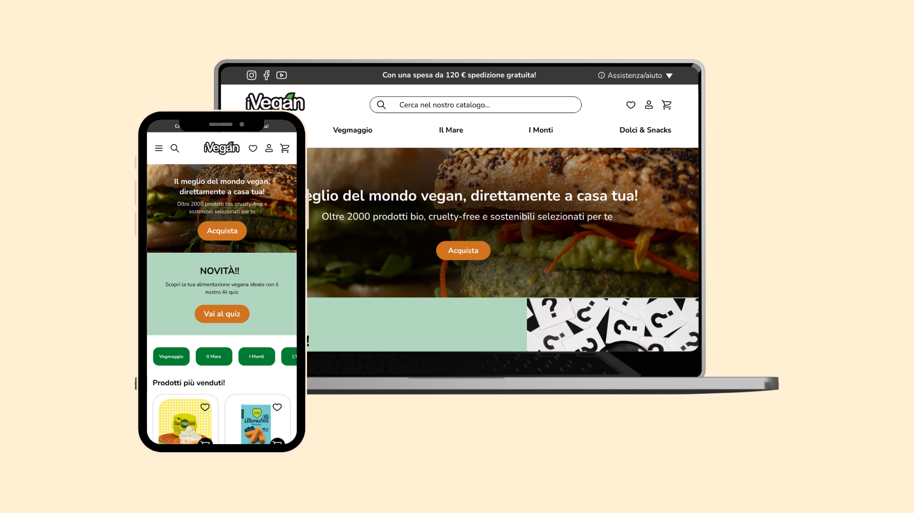

iVegan
ri-design del sito iVegan
- Anno: 2025
- Ruolo: UX/UI Designer
- Strumenti: Figma, Maze, Wave
Overview
Il progetto iVegan nasce con l'obiettivo di migliorare l'esperienza d'acquisto del più grande e-commerce italiano dedicato ai prodotti vegani. L'intervento ha riguardato la riorganizzazione dell'architettura informativa, il miglioramento della chiarezza visiva e l'ottimizzazione dei flussi per supportare un'esperienza più accessibile, intuitiva e coinvolgente.
Processo di lavoro
Il processo è stato articolato in cinque fasi principali:
1. Discovery
Analisi del sito, competitor, utenti e journey per individuare aree di miglioramento.
2. Accessibilità
Applicazione dei principi WCAG per un'esperienza inclusiva e chiara.
3. Wireframing
Creazione di flussi e layout principali per validare la struttura.
4. User Interface
Sviluppo del design system e delle interfacce finali coerenti e piacevoli da usare.
5. User Test
Test con utenti reali e iterazione sulle soluzioni proposte.
Risultati
- Esperienza d'acquisto più fluida
- Maggior chiarezza e accessibilità
- Riduzione dei punti di attrito nel flusso
- Interfaccia coerente e scalabile nel tempo